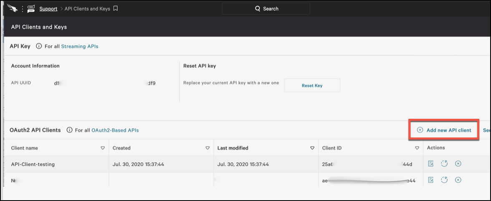

Endpoint Detection and Response
Endpoint Detection and Response (EDR) applications monitor endpoints for suspicious activity and provide visibility into malware and other cyber threats. Netskope supports Carbon Black and CrowdStrike for EDR integrations. A basic threat protection license is required. Contact Support to get this feature enabled.
Configure Carbon Black
Before you begin, make sure you have your Carbon Black API key and server IP address; these are needed to complete this procedure.
To configure a Carbon Black integration:
Go to Settings > Threat Protection > Integration.
Click the Carbon Black application box.
Enter and select parameters for each field:

API Key: Enter your API key.
Type: Select Cloud or On-premises to specify whether the endpoint server is cloud-based or local (on-premises). On-premises requires a Netskope Secure Forwarder integration.
For On-Premises appliance integrations, select the serial number of your Secure Forwarder from the dropdown.
Tip
For specifics about Secure Forwarder integrations, go to Settings > Security Cloud Platform > On-Premises and click On-Premises Infrastructure. The Infrastructure section on this page displays the serial numbers of your appliances.
Server: Enter the IP address or FQDN of your Carbon Black server.
When finished, click Save.
After configuring Carbon Black:
Create a Remediation Profile that specifies this Carbon Black integration.
Go to Policies > Threat Protection > Remediation Profiles, and then click New Malware Remediation Profile.
Select the Carbon Black EDR server and the Actions to perform (Isolate, Alert, or Add to Watchlist/Blocklist). When finished, click Next.

Name the profile and click Save Malware Remediation Profile.
Specify the Remediation profile in an API-enabled Protection or Real-time Protection policy (for Real-time Protection, see the next step).
For an API-enabled Protection policy, go to Settings > Threat Protection > API-enabled Protection. Scroll down to the Settings section and click Edit Settings. Enable one or more Remediation Endpoints checkboxes, depending on severity preferred, and then select the Carbon Black remediation profile. When finished, click Save.

For more details about using threat protection in an API-enabled Protection policy, refer to: Configure Threat Protection for API-enabled Protection.
For an Real-time Protection policy, go to Policies > Real-time Protection and click New Policy. While creating the policy, in the Action section, select an an option from the Action dropdown list, and then select a Carbon Black Remediation profile from the dropdown list. Finish creating the Real-time Protection policy.

For more details about using threat protection in an Real-time Protection policy, refer to: Configure Threat Protection for a Real-time Protection Policy
After a Remediation Profile has been added in policy settings, Remediation alerts will get generated in SkopeIT when malware gets detected.
Configure CrowdStrike
A CrowdStrike integration requires that you have configured an API Client in CrowdStrike. Also, your CrowdStrike API Client ID and Secret are required to complete these steps. The API Client Secret is only shown when the API Client is created or reset. For more details, refer to the Defining your first API Client section in Getting Access to the CrowdStrike APIs.
Note
Netskope posts malware hashes to CrowdStrike. However, unless that malware was actually detonated on a CrowdStrike-protected endpoint, you will not be able to see Netskope-supplied hashes in the CrowdStrike console. CrowdStrike has implemented its custom Indicators of Compromise (IOC) interactions this way. For more details, refer to How to Consume Threat Feeds.
After Netskope pushes the malware hash file to CrowdStrike, endpoints are checked to see if that malware hash file exists. If so, Netskope retrieves the identity of the endpoints and captures the details in a SkopeIT alert. If no endpoints have the malware hash file, Netskope publishes the Indicators of Compromise IOC into CrowdStrike's Custom IOC repository.
You can see subsequent file matches in CrowdStrike against those IOCs when looking at the Detections page, scrolling down into Tactics and Techniques, and looking for Custom Intelligence via Indicators of Compromise. To see the actual contents of that file, you will need to run the appropriate API query as documented by CrowdStrike.
To create an API Client in CrowdStrike:
In the CrowdStrike UI, go to the API Clients and Keys page.
 Enter a client name, and then change the API Scopes. Deactivate all scopes except for Host (= Read) and IOCs (= Read+Write). When finished, click Add.

In the API Client Created dialog, copy the Client ID and Secret. These are needed to integrate CrowdStrike with Netskope. When finished, click Done.

The new API Client is shown on the API Clients and Keys page.

Proceed below to integrate CrowdStrike with Netskope.
To configure a CrowdStrike integration in the Netskope UI:
Go to Settings > Threat Protection > Integration.
Click the CrowdStrike application box to create the integration.
Enter and select parameters for each field:

API Client ID: Enter your CrowdStrike API Client ID.
API Client Secret: Enter your CrowdStrike API Client Secret.
Type: Enable Cloud.
Server: Enter one of these URLs:
api.crowdstrike.com,api.eu-1.crowdstrike.com,api.us-2.crowdstrike.com, orapi.laggar.gcw.crowdstrike.com. For more information, refer to: Auth Token APIsInstance Name: Enter a name for this integration.
When finished, click Save.
After configuring CrowdStrike, create a remediation profile to use in a policy that identifies threats so Netskope can take remedial actions.
Create a Remediation Profile that specifies the CrowdStrike integration.
Go to Policies > Threat Protection > Remediation Profiles, and then click New Malware Remediation Profile.
Select the CrowdStrike EDR server and select the Actions to perform:
Alert: Malware Remediation alerts provide CrowdStrike endpoints information.
Isolate: This option is not currently supported.
Add to Watchlist/Blocklist: Adds the detected malware file MD5 as a custom IoC in CrowdStrike.
When finished, click Next.

Name the profile and click Save Malware Remediation Profile.
Specify the Remediation profile in an API-enabled Protection or Real-time Protection policy (for Real-time Protection, see the next step).
For an API-enabled Protection policy, go to Settings > Threat Protection > API-enabled Protection. Scroll down to the Settings section and click Edit Settings. Enable one or more Remediation Endpoints checkboxes, depending on severity preferred, and then select the CrowdStrike remediation profile. When finished, click Save.
For more details about using threat protection in an API-enabled Protection policy, refer to: Configure Threat Protection for API-enabled Protection.
For an Real-time Protection policy, go to Policies > Real-time Protection and click New Policy. While creating the policy, in the Action section, select an an option from the Action dropdown list, and then select a CrowdStrike Remediation profile from the dropdown list. Finish creating the Real-time Protection policy.

For more details about using threat protection in an Real-time Protection policy, refer to: Configure Threat Protection for a Real-time Protection Policy
After a Remediation Profile has been added in policy settings, Remediation alerts will get generated in SkopeIT when malware gets detected.
 |